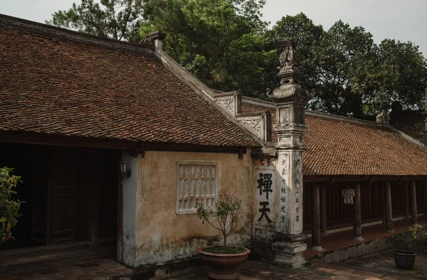
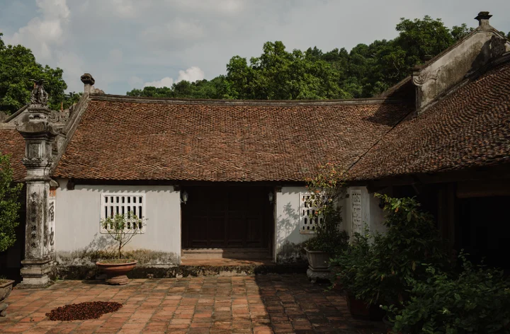
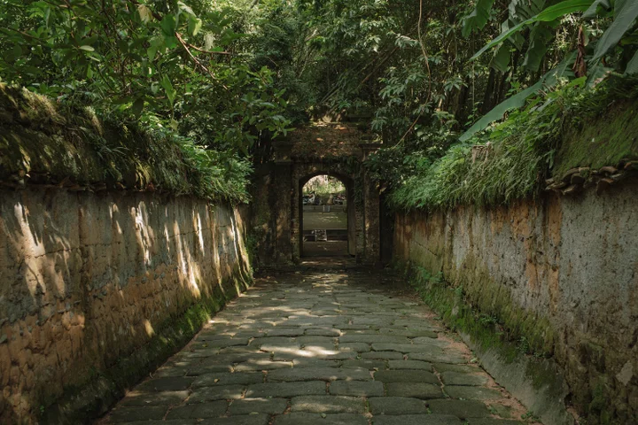
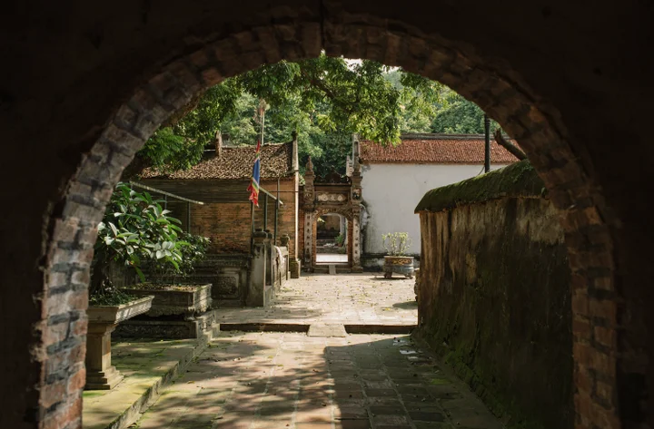

Review chùa Bổ Đà Bắc Giang - danh lam thắng cảnh nổi tiếng xứ Kinh Bắc xưa
22:28 06/05/2024
Những dịp đầu năm, ngày rằm, mùng một, du khách có thể đặt chân đến nhiều nơi linh thiêng để xin lộc song có một danh thắng cực kỳ nổi tiếng, được nhiều người biết đến và luôn tìm về hành hương chính là chùa Bổ Đà. Chùa Bổ Đà là một danh lam cổ tự nổi tiếng của vùng Kinh Bắc xưa nay thuộc xã Tiên Sơn (Việt Yên - Bắc Giang). Nơi đây có vườn tháp lớn nhất Việt Nam chôn giữ tro cốt của hơn 1000 vị tăng ni phật tử từ 300 năm trước. Có thể cảnh đẹp hoang sơ, tĩnh lặng, trầm mặc của Bổ Đá sẽ là một địa chỉ hành hương không thể bỏ qua với bất kỳ du khách nào.

Nếu bạn là fans của bộ phim Thiên mệnh anh hùng hẳn sẽ vô cùng ấn tượng với khung cảnh cổ kính, trầm mặc được sử dụng trên phim. Ít ai biết bối cảnh quay bộ phim nổi tiếng này chính là chùa Bổ Đà (Bắc Giang). Tương truyền ngôi chùa này đã có từ thời Lý vào khoảng thế kỉ thứ 11. Dưới triều đại vua Lê Dụ Tông chùa đã được tu tạo lớn. So với những ngôi chùa truyền thống, Bổ Đà có kiến trúc đồ sộ, độc đáo và khác biệt, đặc biệt là khuôn viên rộng lớn hơn nhiều, có nhiều cây xanh, tháp, bậc thang. Kiến trúc nổi bật của chùa là nội công ngoại quốc. Vì vậy mà vẻ thanh tĩnh, cổ kính, trầm mặc của chùa càng trở nên rõ nét hơn.
Phối cảnh tổng quan của chùa Bổ Đà có tổng cộng 16 tòa tháp lớn nhỏ, 92 gian đầy đủ các chức năng như nhà khách, tòa tháp, tòa tam bảo, nhà tổ, nhà tạo soạn. Lối kiến trúc truyền thống của nhà Lý thể hiện rất rõ nét qua hình ảnh tòa tam bảo xây lối chữ Đinh, hậu cung gồm 5 gian, tiền đường gồm 7 gian. Toàn bộ bậc thềm được lát đá xanh, những dấu vết thời gian vẫn còn in hằn rõ trên mỗi công trình, kiến trúc cho thấy chùa được xây dựng từ rất lâu nhưng đến nay vẫn còn nguyên vẹn vị trí.
Chùa chính Tứ Ân

Được xây dựng từ thời vua Cảnh Hưng (Lê Hiển Tông) do vị sư tổ họ Ngô tự là Tính Ánh cùng nhân dân địa phương góp công xây dựng. Với hàm ý răn dạy tăng ni phật tử phải biết báo đáp ân trời đất, ân thầy, ân cha mẹ, ân thầy.
Am Tam Đức
Cũng được xây dựng từ thời vua Lê Hiển Tông, Tam Đức đại diện cho sự thông tuệ của ba đức tính Trí đức, Đoạn đức và Ân đức. Trên am Tam Đức sẽ thờ tổ Nhi Thị, là người giàu đức hy sinh và có công lao lớn trong việc đóng góp, mở mang khuôn viên của chùa Bổ Đà.
Chùa Cao
Chùa Cao xây dựng muộn hơn, khoảng thế kỷ 16, gắn liền với sự tích người tiều phu thiện lương, chất phác. Ban đầu nơi đây là một gian chùa nhỏ lớp gianh vách đất.
Ao Miếu
Tại Ao Miếu nổi lên các khối đá lớn nằm xen kẽ lên nhau giữa một ao nhỏ gọi là Thạch Long. Trên Ao Miếu có thờ Thạch Linh Thần Tướng người đã có công đánh đuổi giặc ngoại xâm.
Vườn tháp chùa Bổ

Đây là vườn tháp cổ kính, rêu phong lớn nhất của Việt Nam. Vườn tháp có quy mô rộng với 110 ngôi tháp và mộ lớn nhỏ khác nhau. Trong vườn tháp còn có 97 ngôi tháp cổ hàng trăm năm tuổi là nơi lưu giữ tro cốt xá lị của hơn 1000 tăng ni, phật tử. Xung quanh ngôi tháp được bao bọc bởi một bức tượng dài được xây từ núi đá và gạch chỉ. Chính điều này làm nên nét riêng cho vẻ đẹp của chùa Bổ Đà.
Không chỉ có khuôn viên rộng rãi với nhiều công trình kiến trúc độc đáo, trong chùa Bổ Đà còn cất giữ rất nhiều chuông đồng, hoành phi, bia đá và 39 pho tượng gỗ từ thời Lê Trung Hưng. Các chuyên gia đánh giá đây là những bức tượng giàu giá trị thẩm mĩ lẫn lịch sử. Đặt chân vào bên trong chùa để dâng hương, hành lễ, du khách sẽ cảm nhận được trọn vẹn vẻ đẹp uy nghi, cổ kính đến từ những hoành phi, câu đối, các pho tượng có từ hàng trăm năm.

Dạo quanh chùa Bổ Đà, du khách chiêm ngưỡng những bậc thang bằng đá phủ lớp rêu phong, xung quanh là cây cối xum xuê, tươi tốt suốt bốn mùa. Điều đặc biệt ở đây chính là khuôn viên, cây cối xung quanh chùa Bổ Đá còn nguyên vẹn nét hoang sơ, cổ kính, chưa có sự can thiệp quá nhiều từ bàn tay của con người. Từng bức tường từ gạch đất xưa, rêu phong vẫn bám, các tòa tháp cổ nhỏ bé rải rác xung quanh con đường đi, các con đường nhỏ còn bám dính bụi dẫn lối du khách đi vào sâu bên trong, càng vào sâu càng mát mẻ, trầm tĩnh.
Hàng năm cứ vào ngày 15 đến ngày 18 tháng 2 âm, người dân trong vùng lại tổ chức tế lễ ở đền Hạ, Trung, Thượng sau đó vãn cảnh chùa. Tổ chức biểu diễn hát quan họ suốt ngày đêm ở sân chùa. Nếu có dịp du khách nhất định phải ghé thăm di tích chùa Bổ Đà - để có thể hiểu thêm về vẻ đẹp của một công trình kiến trúc cổ kính, trầm mặc, vãn cảnh, xin lộc sức khoẻ, làm ăn.
Địa chỉ:
Khu di tích chùa Bổ Đà xã Tiên Sơn (Việt Yên - Bắc Giang)
Cách trung tâm thành phố Bắc Ninh chưa đến 5km, đi dọc theo Đường Âu Cơ là có thể đến khu di tích lịch sử Đền Cùng, Giếng Ngọc thuộc làng Diềm, xã Hòa Long, Thành Phố Bắc Ninh, Bắc Ninh. Đây là một trong những điểm đến tâm linh
Trải qua nhiều lần trùng tu, sửa sang, chùa Dạm (còn gọi là Đại Lãm- Thần Quang Tự) ngày càng hoàn thiện, trở thành một trong những địa danh du lịch nổi tiếng của xứ Kinh Bắc. Tôi đến chùa Dạm vào một ngày giữa tháng 2, thời điểm hành hương đầu xuân.
Khi đặt chân đến Mũi Né - Phan Thiết , không thể không nhắc đến Ngô Homestay - nơi lưu trú lý tưởng cho những du khách tìm kiếm không gian đẹp, thoáng đãng với giá cả phải chăng.
Một trong những biểu tượng tâm linh nổi bật nhất của Đà Nẵng, nơi hội tụ đầy đủ những giá trị ấy, chính là chùa Linh Ứng nằm trên bán đảo Sơn Trà. Đây không chỉ là điểm du lịch đơn thuần mà còn là chốn bình yên
Nếu bạn là một người đam mê du lịch thì Đà Nẵng có lẽ là điểm đến không thể bỏ qua trong danh sách của mình. Được thiên nhiên ưu ái ban tặng cho bờ biển cát trắng dài và đẹp, Đà Nẵng từ lâu đã được khách du lịch